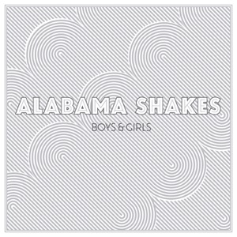
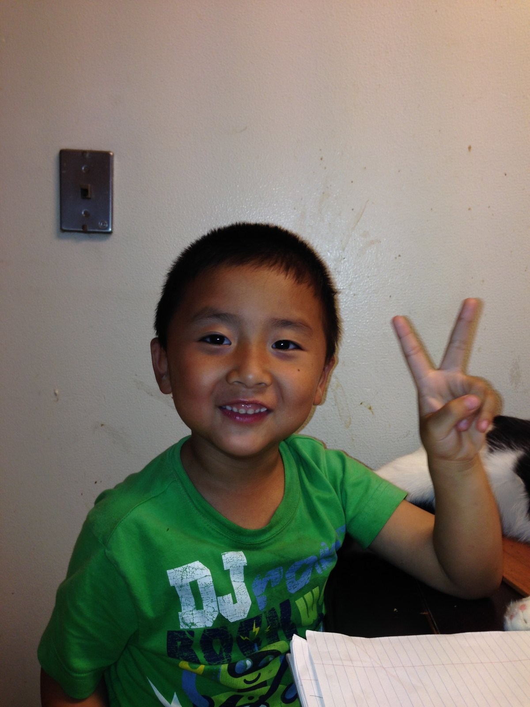

Fight On
What “Fight On” Means to Me


The bell went at three, and for about ten minutes the front of that school was the busiest place in the world.
Cars curled around the loop with their engines running. Somebody’s dad always had the window down. Somebody’s mum always had a snack ready in the passenger seat, which I thought was the most extraordinary act of forethought I had ever witnessed. Then the loop was empty, the engines were gone, and what was left was a very large campus, a low sun, and me.
My mother was a nurse, and her shift did not end when other people’s did. So I had six hours, no phone, and an entire school to myself.
I learned that place the way you learn a house in the dark. I knew which trees held weight and which ones dropped you. I knew the patch of concrete behind the cafeteria that stayed warm until five and took chalk well. I drew on it for years, rain took all of it, and I drew again. Mostly the same three things: a stadium, a house with far too many windows, and a car, always with two people in it.
The six hours were never the hard part. A boy in a tree with an entire school to himself is closer to a king than a castaway.
The hard part was nine o’clock, when the headlights finally came around the loop, and I got in the car and saw her face and understood immediately that her day had been worse than mine.
So I made a decision in that passenger seat that I have never unmade. Her day would not get any heavier because of me. I would be the easy part. I never mentioned the six hours. I told her something funny from recess, and if nothing funny had happened, I made something up. Then I watched her laugh on the drive home, and that felt like winning.
That decision went everywhere with me after that.
At Ranch 99
It went with me to the grocery store, where a child does a particular arithmetic once he knows the family condition. You do not ask. That is the entire skill. You see the thing, you picture that nine o’clock look on your mother’s face, and you keep walking. Above all, you do not make it a moment.
But not asking for things is only half of it. The other half is going and getting them yourself.
In the classroom
My English arrived late, so every summer of elementary school I went back to summer school to relearn what I had not held the first time. I never thought of it as punishment. I thought of it as another lap.
In middle school I was not placed in the advanced math class. So I asked. Then I asked again. Then I walked to my teacher’s door and knocked on it myself, a small, stubborn kid with nothing to offer but a promise that nobody in that room would outwork me.
I was never the boy who simply knew. I was the boy who went back, found exactly where my understanding broke, and fixed it. Knowing things quickly runs out eventually. Refusing to leave never does.
On the field
I was the fat kid, picked last so often it stopped feeling like an event and started feeling like a forecast. I picked up a lacrosse stick for the first time at a tryout, in front of boys who had held one since they were eight, and I know the exact sound a group makes watching you fail at something easy.
I came back the next day anyway.
First one out, last one in. Diving for balls nobody else would chase. Knocked down by boys who were bigger, faster and six years ahead, and getting up smiling, every time, until getting knocked down stopped meaning anything at all.
Those boys were not gifted. They were early. I had been comparing my first week to their sixth year. So I wrote down what beat me and trained only that. I was once laughed at for how badly I played spikeball. Today I am the best spikeball player I know. I was never handed talent. I just refused, very cheerfully and for a very long time, to go home.
With people
The third place I refused to quit was people. If you are going to be the worst athlete on the field, you had better be the warmest person on it. I learned to find what makes a room laugh, and to find it fast, especially for whoever was having a worse day than me. It is what I did in that car at nine o’clock, and I have never stopped.
Some people will mistake a soft heart for a weak one. I have loved people who did not love me back the same way, and I have never once regretted loving first. I would rather keep my heart open and bruised than closed, safe, and small.
And then I got to USC
And found they had made a slogan out of it. Fight On, on every wall and every shirt.
To me it was never a cheer. It means nine o’clock in an empty school loop and getting in the car smiling anyway. It means nobody is coming to make this easier, and you go anyway, and you go cheerfully, because bitterness is heavy and I never had room to carry it.
I did not learn to fight on at USC. I learned it on warm concrete behind a cafeteria, with a piece of chalk and nobody watching. USC just gave me the words.
I am not the victim of this story. I am the reason it has a good ending.
If any of that landed, I would genuinely like to hear from you. fyruan@usc.edu